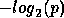
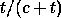
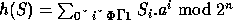
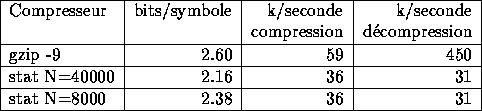

est la
probabilité d'apparition du symbole . Plus précisément, pour coder le
symbole , il suffit de connaitre et . Les
probabilités sont transmises au codeur sous la forme fractionnaire
avec .
est la
probabilité d'apparition du symbole . Plus précisément, pour coder le
symbole , il suffit de connaitre et . Les
probabilités sont transmises au codeur sous la forme fractionnaire
avec .
Fabrice Bellard
Il s'agit de réaliser un compresseur/décompresseur de données sans perte. Les priorités ont été définies ainsi :
Les méthodes classiques fondées sur les dictionnaires du type Ziv-Lempel sont dépassées en terme de taux de compression par les méthodes statistiques à contexte fini [1]. Nous avons donc choisi une de ces dernières.
L'algorithme est mono-passe, donc il doit s'adapter aux données de façon dynamique. Le principe du compresseur est le suivant:
Il s'agit de prédire le symbole suivant d'un fichier en utilisant un contexte constitué au plus des symboles précédents ( est un nombre positif arbitraire fixé). On conserve donc en mémoire une table T de tous les contextes déjà rencontrés dans le fichier. Lorsque le symbole a été codé, on met à jour T. Notons que le décompresseur fonctionne de façon exactement symétrique.
Pour le codage du symbole courant, on commence par chercher dans T le plus long contexte déjà recontré coïncidant avec le contexte courant. On a noté pour chaque contexte de T une liste L des fréquences de tous les symboles le suivant. Plusieurs cas se présentent :
Ce n'est pas la partie principale du projet, et elle ne sera pas décrite ici. On s'attachera à faire un programme rappelant gzip ou compress et pouvant facilement être étendu par ajout d'autres méthodes de compression, de cryptage, ou de détection et correction d'erreurs.
En fait l'algorithme choisi est un peu plus compliqué que celui décrit en 1.2. En voici les détails.
Nous utilisons un codeur arithmétique pour coder les symboles. Si un symbole a une probabilité d'apparition p, nous le codons en utilisant en moyenne  bits.
Nous prévoyions au départ d'utiliser un codeur arithmétique binaire fonctionnant par approximations, ce qui aurait donné une vitesse plus grande [2]. Malheureusement, son utilisation est empêchée par le mécanisme d'exclusion des symboles. Notre codeur est donc du type très classique bit plus follow et utilise 2 multiplications et 2 divisons entières par symbole codé. Une description précise de ce codeur sort du cadre de ce rapport.
Nous avons intégré au codeur et au décodeur des buffers pour accélérer les entrées/sorties.
Les tests de vitesse démontrent que le codeur ne mobilise pas plus de 15% du temps total de compression, ce qui est satisfaisant.
Lorsqu'on a été obligé d'envoyer des codes ESCAPE, on peut exclure de la liste L des symboles associés au contexte courant ceux qui ont déjà été rencontrés dans les contextes de longueur supérieure. En effet, la génération de ESCAPE implique qu'aucun des symboles des contextes de longueur supérieure ne vient après le contexte courant. Cette amélioration augmente le taux de compression d'environ 5% [1].
Etant donné notre cahier des charges, nous devons l'incorporer. Cela pose un grave problème: il est quasiment impossible d'utiliser une structure autre qu'une liste chaînée pour stocker la liste des symboles associés à un contexte si on veut permettre le mécanisme d'exclusion, tout en facilitant les calculs pour le codage du symbole courant. Etant donné que l'on a 256 symboles différents, le temps de parcours de la liste n'est pas négligeable.
Le système d'exclusion utilise un tableau à 256 entrées. L'idée de départ consiste à initialiser ce tableau à FALSE, puis mettre à TRUE toutes les entrées correspondant aux numéros de symboles exclus. Cela présente un défaut: il faut initialiser ce tableau avant chaque nouveau codage de symbole, et le temps pris n'est pas négligeable.
Une méthode consiste à utiliser un tableau d'entiers, et à caractériser l'exclusion d'un symbole par la mise dans l'entrée du tableau correspondante d'un certain code. Si on change ce code à chaque nouveau symbole (par incrémentation par exemple), on évite l'étape d'initialisation, ou du moins on la rend moins fréquente.
L'utilisation du codeur/décodeur arithmétique nécessite le partitionnement
de l'intervalle en sous-intervalles de mesure où est la
probabilité d'apparition du symbole . Plus précisément, pour coder le
symbole , il suffit de connaitre et . Les
probabilités sont transmises au codeur sous la forme fractionnaire
avec .
Le codage d'un symbole nécessite donc un parcours linéaire de L où l'on additionne les fréquences des symboles jusqu'à la rencontre du symbole à coder. Notons que l'on numérote ici les symboles suivant leur ordre d'apparition dans la liste car il suffit que compresseur et décompresseur utilisent la même convention.
On incrémente ensuite la fréquence associée au symbole codé et l'on teste s'il faut renormaliser le contexte.
Pour des raisons d'efficacité, on peut inclure dans le contexte la somme totale des fréquences des symboles associés, c, et le nombre de symboles, t. On évite ainsi un parcours global de la liste L. Notons que ces variables sont inutiles dans le cas où certains symboles doivent être exclus.
Quelle est la probabilité à affecter à ESCAPE ? Il n'existe pas de méthode optimale. Nous avons choisi pour des questions de vitesse et de simplicité une probabilité égale à . Elle correspond à la méthode PPMC décrite dans [1].
Pour des questions d'encombrement mémoire, la fréquence de chaque symbole de L est codée sur 1 octet. D'autre part, nos routines de codage arithmétique imposent une borne supérieure sur la valeur du dénominateur des probabilités. Nous devons donc renormaliser les contextes de temps en temps en divisant par exemple les fréquences par 2. Les symboles atteignant une fréquence nulle sont exclus du contexte.
Ce dernier point augmente légèrement le taux de compression en permettant une adaption plus rapide.
On utilise un symbole spécial pour coder la fin de fichier. Cela permet de rendre le compresseur réellement monopasse. D'autres caractères spéciaux peuvent être ajoutés pour permettre par exemple un contrôle de flux. Ils sont codés comme s'ils n'apparaissaient dans aucun contexte.
La taille de la table des contextes est limitée par la mémoire allouée au compresseur. On a choisi ici une approche originale consistant à éliminer les contextes les moins récemment utilisés [3]. Les contextes sont donc rangés dans une liste doublement chaînée permettant les 2 opérations de base:
Cette structure ne permet pas d'utiliser facilement un arbre ou un trie pour rechercher les contextes. On utilise donc une table de hachage avec gestion des collisions par une liste simplement chaînée. Elle aurait dû être en fait doublement chaînée pour permettre l'effacement rapide d'un contexte. Comme les contraintes mémoire sont sévères, nous avons préféré supposer que la table de hachage est assez grande pour limiter le nombre de collisions.
La liste des fréquences des symboles est une liste simplement chaînée contenant le numéro du symbole et sa fréquence.
Etant données les contraintes de vitesse et de mémoire, un appel à l'allocateur mémoire standard du C est proscrit.
Nous aurions pu choisir comme dans [3] d'allouer un heap (zone mémoire) pour les structures de taille fixe associées aux contextes, et un autre pour stocker les éléments des listes de symboles associés aux contextes. Cette solution n'est pas bonne car elle n'utilise pas la mémoire de façon efficace: il faudrait connaitre a priori le rapport entre l'occupation mémoire du premier heap et du second, ce qui dépend du fichier compressé.
Notre compresseur n'utilise donc qu'un seul heap, de taille paramétrable suivant la mémoire disponible et le taux de compression voulu. Ce heap est structuré en noeuds de taille fixe. On maintient constamment une liste simplement chaînée des noeuds libres pour l'allocation et la désallocation mémoire. Dans un noeud on stocke soit un contexte, soit un certain nombre d'éléments de la liste des symboles associés aux contextes.
L'expérience montre que c'est un excellent compromis.
L'implémentation de l'algorithme doit être soignée car certaines procédures sont exécutées beaucoup de fois par symbole. On a veillé à limiter au maximum le nombre d'accès mémoire car c'est ce qui prend le plus de temps sur les ordinateurs modernes. De plus, en conservant l'adjacence des données corrélées, on favorise l'utilisation du cache interne du micro-processeur. Les seules suppositions faites au niveau du hardware sont: int codé sur 32 bits, short sur 16 bits, et char sur 8 bits.
Voir les fichiers arith_e.c et arith_d.c.
On notera l'utilisation d'une fonction passée en argument aux fonctions de codage qui sert à écrire ou lire un buffer sur disque (ou ailleurs). Ainsi les routines de codages sont isolées des fonctions d'entrée/sortie.
Voir le fichier ppm.c.
Tout l'algorithme s'articule autour de la structure NODE . On remarque l'utilisation massive d'index 16 bits à la place de pointeurs. Cela permet d'économiser de la précieuse mémoire. La structure NODE a ainsi une taille de 16 octets pour accélérer l'accès par les index.
Lors des statistiques, on a remarqué que les contextes contenant une liste de 1 ou 2 symboles sont de loin les plus courants (80% des contextes en moyenne). On a donc intérêt à les gérer de façon spécifique, ce qui explique la structure un peu compliquée nécessaire pour gérer les contextes.
La fonction de hachage est du type:  où a=63 et n=14. Au niveau théorique elle ne semble pas bonne mais les tests montrent qu'elle se comporte plutôt bien et surtout qu'elle se calcule très vite. Sa formule s'exprime aussi de façon récurente ce qui permet de la calculer partiellement pour chaque longueur de contexte à chercher.
Voir les fichiers stat.c, testcode.c, et getopt.c.
Le fichier de commande stat_test permet de tester la compression sur un fichier donné en vérifiant le checksum. Une routine de calcul de CRC 32 bits aurait pu être incluse.
Nous avons réalisé les tests sur les fichiers du Calgary Text Compression Corpus sur un 486DX2/66 sous Linux. On a comparé les compresseurs suivants:
Les résultats sont résumés dans le tableau 1

Table 1: Résultats des tests
stat est seulement 2 fois plus lent que gzip en compression. C'est au niveau de la décompression qu'il est très nettement distancé. En effet, la méthode utilisée est totalement symétrique, alors qu'un décompresseur de type LZ77 est très simple et très rapide.
Notre système de gestion de mémoire est très efficace, puisque même avec aussi peu de mémoire que 128k (soit moins que gzip en compression) nous avons des gains significatifs.
Des tests plus poussés non mentionnés ici montrent que sur les fichiers textes stat atteint des vitesses importantes et compresse beaucoup mieux (10% environ) que n'importe quel autre compresseur Ziv-Lempel. En revanche sur les fichiers binaires il peut être très lent, et les gains par rapport à Ziv-Lempel sont plus faibles. Cette lenteur provient de l'utilisation du mécanisme d'exclusion qui impose de longs parcours de listes chaînées.
En revanche, grace à son système de gestion de mémoire efficace, il bat les compresseurs statistiques standards comme PPMC grace à ses facultés "d'oubli adaptif" des contextes les moins utilisés.
Il reste encore bien des choses à améliorer. Ce compresseur ne représente qu'une étape dans la progression des méthodes statistiques. Nos dernières études montrent qu'il est possible de faire un compresseur/décompresseur beaucoup plus rapide que gzip tout en augmentant encore les gains (de quelques pourcents) en augmentant seulement légèrement l'encombrement mémoire. Sa description sort du cadre de ce rapport.
Au niveau des fichiers binaires, nos tests ont montré qu'il était possible de faire des "pré-processeurs" adaptés au langage machine d'un ordinateur donné qui présentent les données au compresseur sous un forme plus facilement compressible.
Pour les textes, on pourrait réaliser des pré-processeurs réalisant par exemple une prédiction de l'indentation des fichiers, ou de la justification des paragraphes, chose que les compresseurs à contexte fini ou à dictionnaire ne peuvent pas faire.
Ce projet est un bon exercice de programmation puisqu'il utilise beaucoup de structures de données imbriquées. Ces dernières, ainsi que les différents algorithmes n'ont pas été choisi au hasard mais résultent bien d'une recherche de compromis entre les différents points du cahier des charges. On a essayé ici de retracer la démarche suivie.